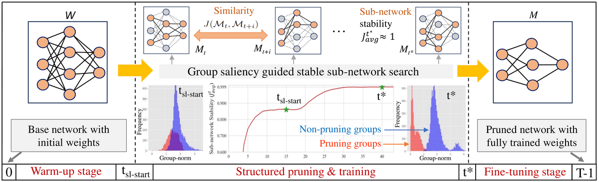

Efficient Deep Learning
Deploying deep networks on mobile, embedded, and intelligent-semiconductor platforms requires models that are both accurate and lightweight. We develop structured pruning and model compression methods that find compact, stable sub-networks during training, reducing computation and memory while preserving accuracy. Our recent One-Cycle Structured Pruning (OCSPruner) removes the need for separate pre-training and fine-tuning stages by searching for a stable sub-network within a single training cycle.